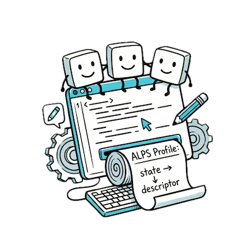

📖 ALPS Editor User Guide
Welcome to ALPS Editor! This guide will help you create and edit ALPS (Application-Level Profile Semantics) documents for API design.
🚀 Getting Started
Creating Your First ALPS Document
- Clear the demo content: Select all (Ctrl/Cmd + A) and delete
- Open skeleton menu: Press Ctrl/Cmd + Space
- Choose format: Select either
ALPS JSON Skeleton or ALPS XML Skeleton
- Start editing: The skeleton will be inserted - a valid but minimal ALPS structure
Tip: The skeleton provides an empty but valid ALPS document ready for you to add your own descriptors.
Opening Existing Files
Drag & Drop: Simply drag any ALPS file (JSON, XML, or downloaded HTML) onto the editor window.
Supported formats: .json, .xml, .html
⌨️ Keyboard Shortcuts
Custom Shortcuts
F8 - Toggle Preview mode (hide editor, show full-width documentation)
Ctrl/Cmd + S - Download ALPS profile (JSON/XML source)
Editor Shortcuts (Ace Editor)
F1 - Show command palette (lists all available Ace editor commands)
Ctrl/Cmd + Space - Trigger auto-completion
Ctrl/Cmd + F - Find
Ctrl/Cmd + H - Find and replace
👁️ View Modes
The editor supports three view modes, accessible via the toolbar:
Document
Full HTML documentation with state diagram and descriptor table. Best for comprehensive view of your ALPS profile.
Diagram
SVG state diagram only. Focus on the visual representation of states and transitions.
Preview
Hide the editor panel, show document full-width. Perfect for presentations or reviewing the final output.
💡 Tip: In Preview mode, clicking on diagram elements will scroll to the corresponding descriptor in the table. Click on table rows to highlight elements in the diagram!
💾 Saving & Downloading
Download Options
Click the Download button to access:
- HTML - Standalone HTML file with embedded diagram (works offline!)
- SVG - State diagram as vector graphics
- Profile (JSON/XML) - ALPS source in your current format
✨ Features
Real-time Validation
The editor validates your ALPS document as you type:
- Syntax validation (JSON/XML parsing)
- ALPS semantic validation (against official schema)
- Error messages appear below the editor
Auto-completion
Press Ctrl/Cmd + Space for:
- ALPS document skeletons
- Descriptor templates
- Schema.org vocabulary suggestions
Interactive Diagram
- Label Mode: Toggle between ID and Title display
- Tag Filter: Filter diagram by tags
- Auto-fit: Diagram automatically adjusts to window size
- Bidirectional sync: Click diagram → scroll to table, click table → highlight diagram
📚 Learn More
🎯 Pro Tip: ALPS bridges vision and implementation. Focus on defining clear semantics that describe what your API does, not how it does it. Good ALPS profiles evolve with your API and serve as living documentation.
Open ALPS Editor | GitHub